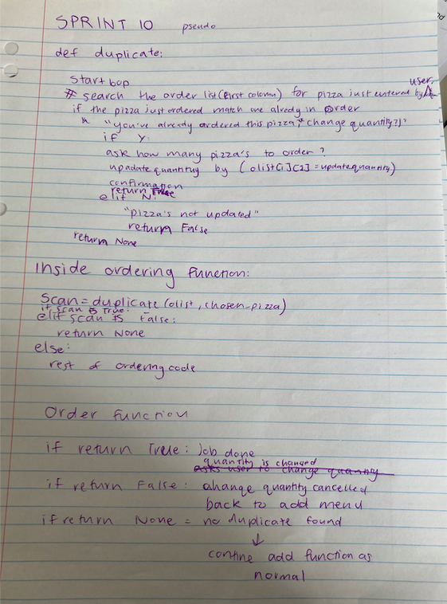
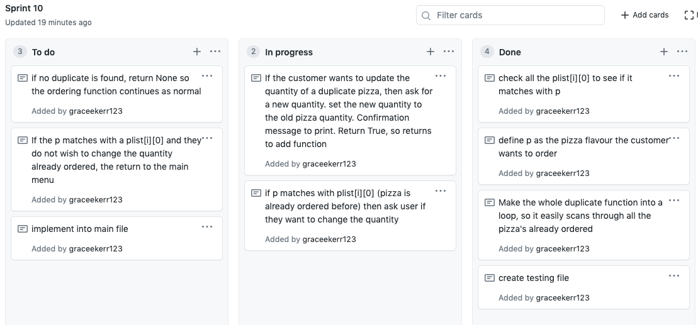
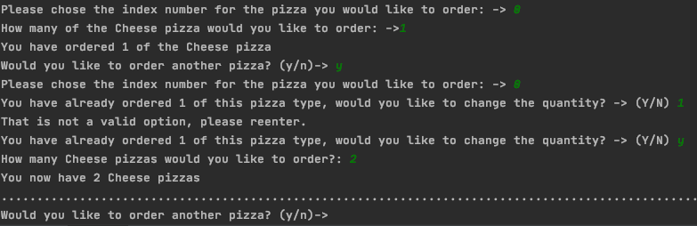
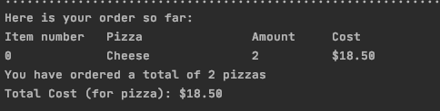
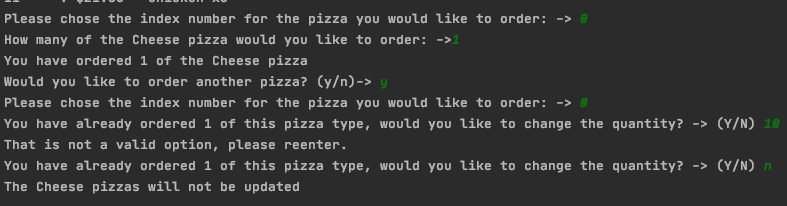
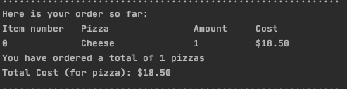
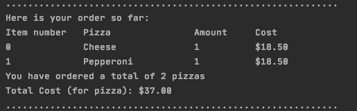
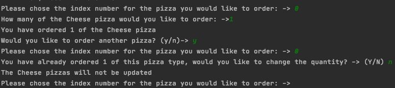
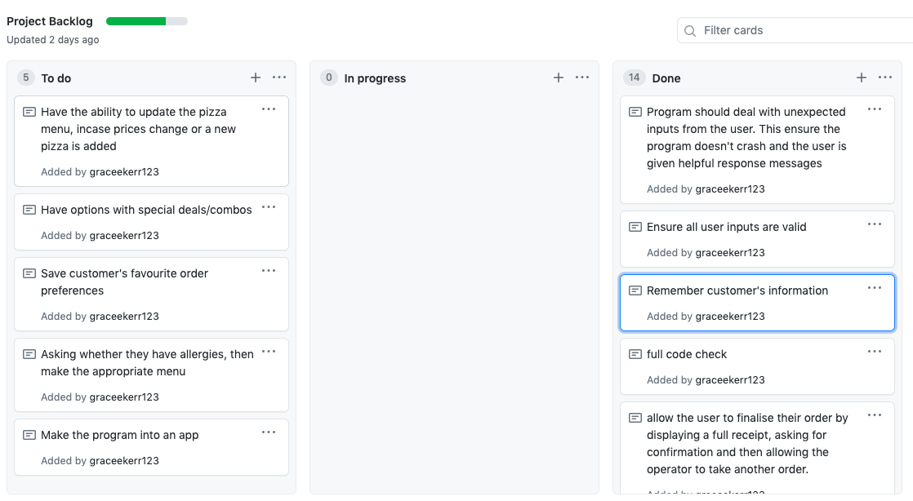
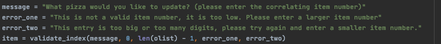

Aim:
To bulid a function which checks customer order for duplicates.
It will search through the customer order for the pizza you want to order. If a duplicate is found, an option is given to the customer to update or to make no further changes.
make a validation function to redirect to the update function when you try and add a pizza already in the order. Therefore the programme has to indentify there's a duplication.
Planning
Sprint Board
Iterative Decision:

Testing When there is a duplicate and user does wish to update quantity

Testing When there is a duplicate and user doesn't want to update quantity

Testing When there isn't a duplicate


User Stories:
I got Tommi to test my code. She acted like a very indecisive customer, this was very important as I got to try out lots of my functions within 1 order. This was very helpful as I realised that my code was strong. I did have a flaw, that I kept my check for the details from sprint 8 as i printed out the customer's input after they entered them. All I had to do was to remove this part of the code.
For the second user story, I got nia to be another customer. An important part of this potential situation is that she ordered 1 BBQ chicken pizza and then tried to add another one later on. This was a great example of the duplicate function working properly.
Reflection:
During working on this sprint I had to decide where the code should lead the user to depending on if there was a duplicate. There are 3 situations. The first situation is when there is a duplicat found and the user does wish to change the quantity of the pizza. I decided that the user should return back to the add menu, so they have an opportunity to order another pizza. The second situation is when a duplicate has been found, but the customer does not wish to change the quanitity already ordered. I decided that the the user should be lead back to the main menu. I did test going back to the add menu (by changing the return None to a continue) but it wasn't good because the customer is forced to order another pizza even if they don't want to. It was fine for the first situation to return to the add menu as they got asked whether they would like to order another pizza; however, if the second situation goes back to the add menu, they are asked straight away what pizza they want to order. The third situation is when no duplicate is found, and the ordering function carries on as normal.
This shows the second situation if they were to go back to the add menu.
I found about learning about how to stroe runring data very interesting through this whole project. This was because there were different python commands depending on what you were doing; also as I had to make sure that the right things were inside/outside of a loop. This is because it would completely wrong to define totalcost as 0 inside a loop, as then everytime it would run through it would go back to 0 (not good).
What my project backlog looks like at the end of the project
As you can see my project backlog isn't completed. However, i put some pretty impossible things for my skill level on there so it would never be done. It goes to show how there's always something else to work on in a project. I'm happy with everything I've completed and I belive my final outcome is done well, was well planned and was well exucuted.
Code Checker
Sadly I wasn't able to input all of my code at once to check it, instead I had to check it indivually. When I did this I got a few errors such as variables not occuring anywhere else in the code, but I couldn't help these. I made sure to check all the docstrings, == into is, and indentations were correct. However, I did get some line length is too long (longer than 79 characters). I did cut down on the length most of my lines, especially the ones with valiations so they would look like this (image below - as you can see all lines ends before that vertical line shown). But they were still too long for that particular code checker. However, I decided to let this past as PyCharm CE allows line length smaller than 140 , which is what I had. SO my code does abide by the phyton convientions.
